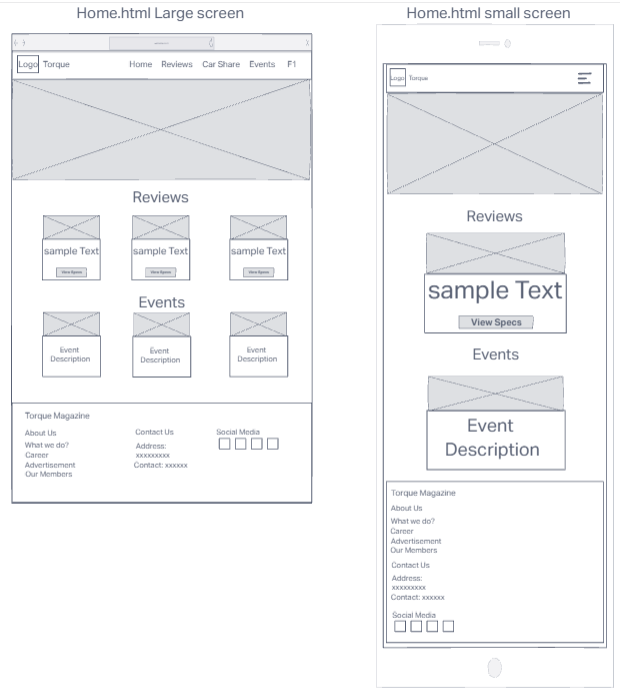
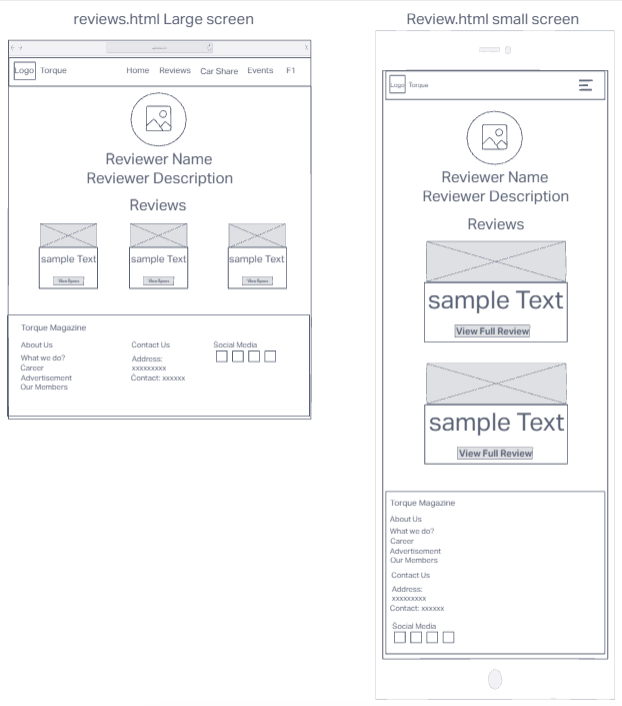
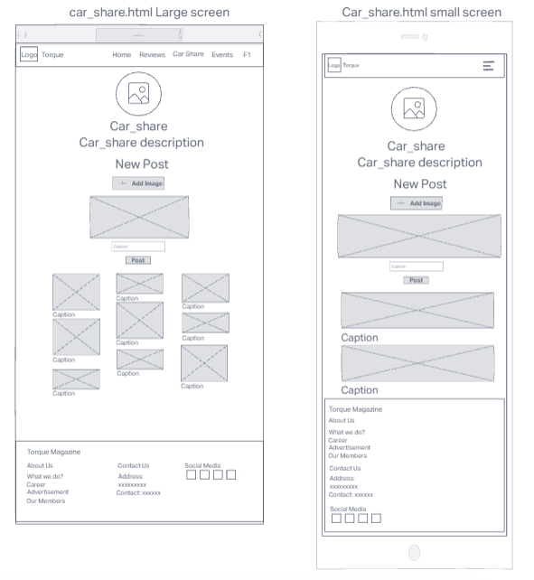
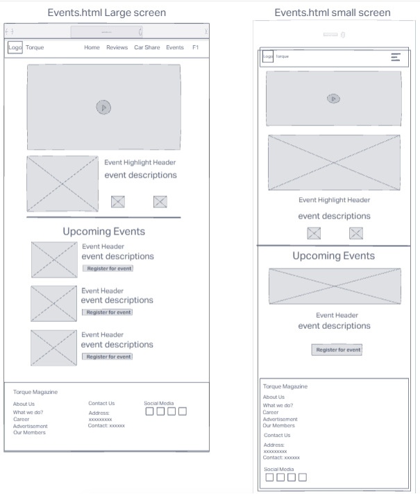
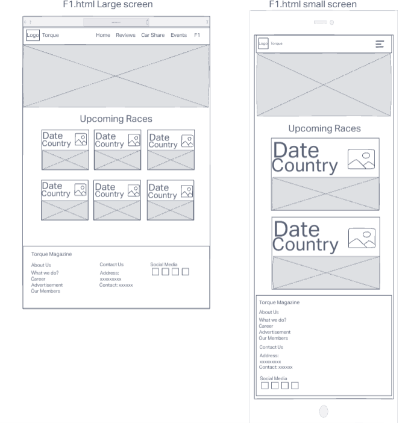
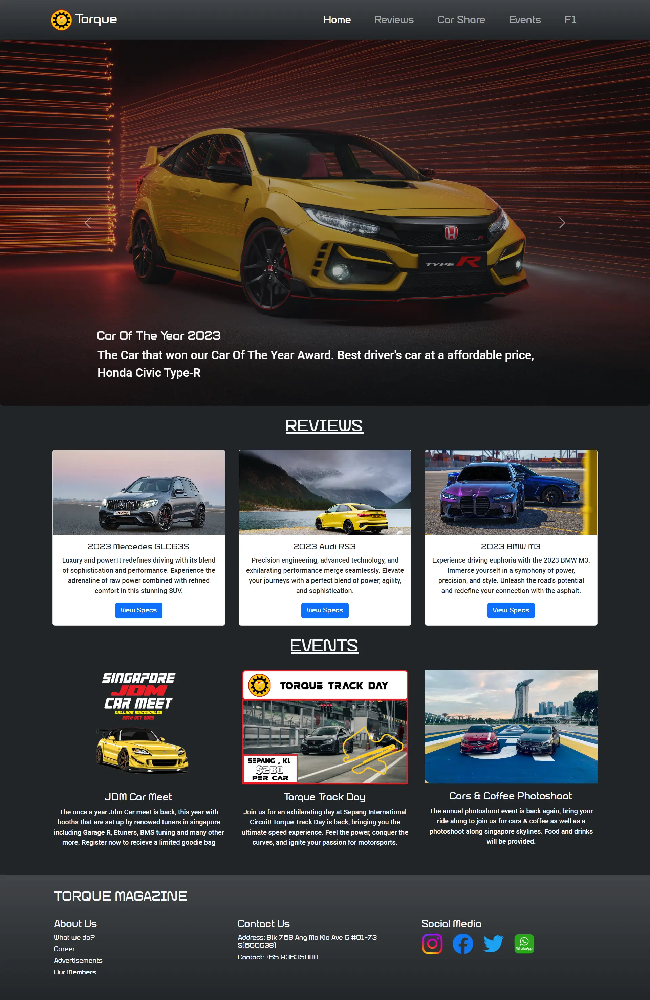
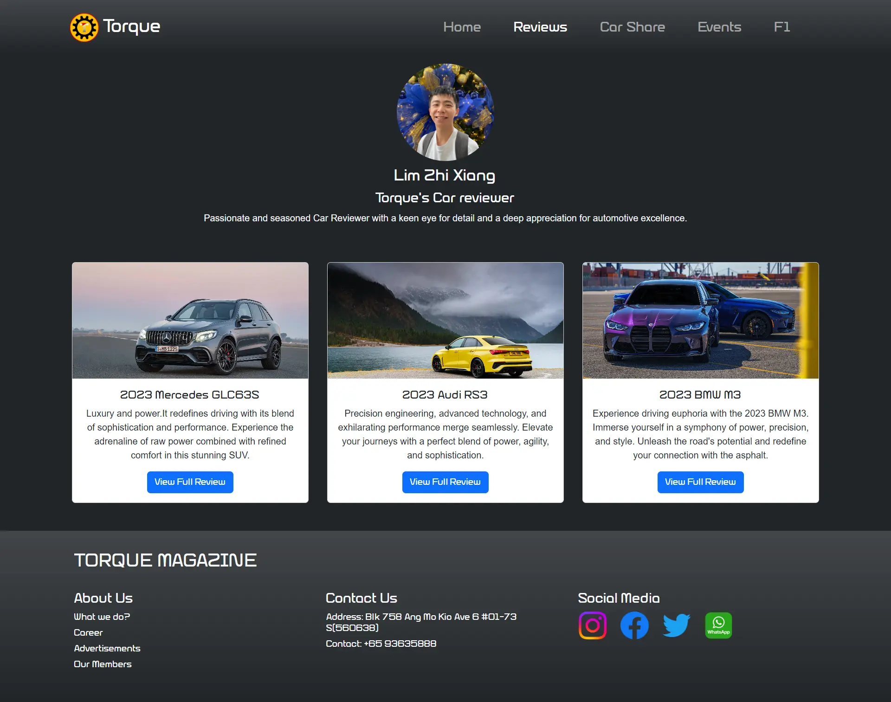
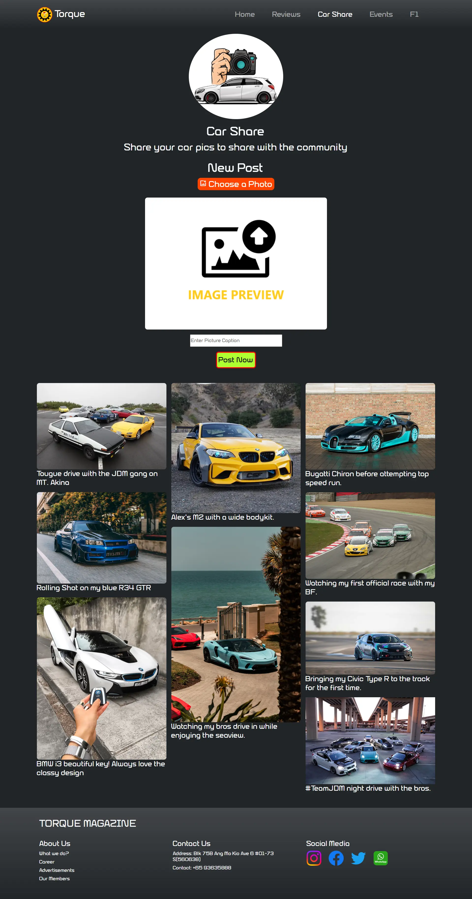
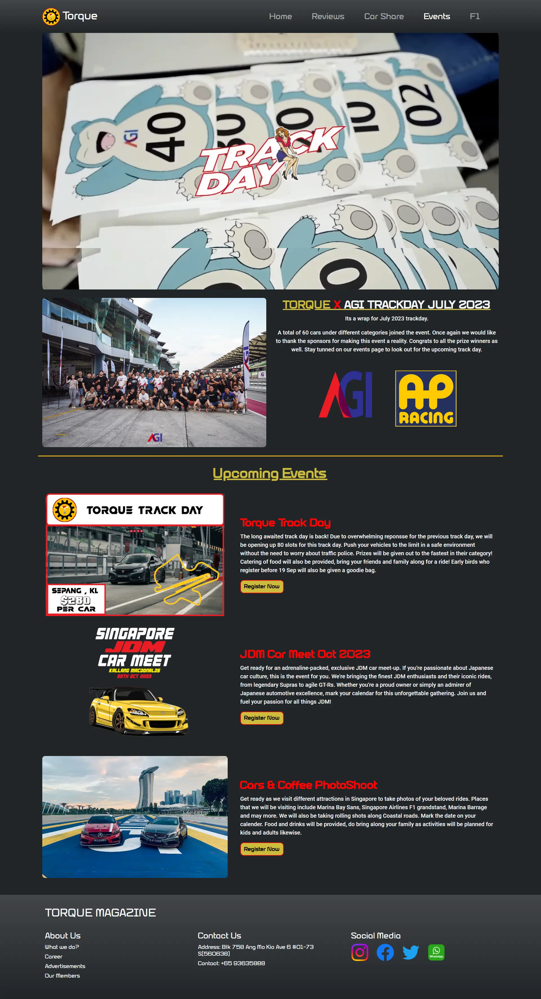
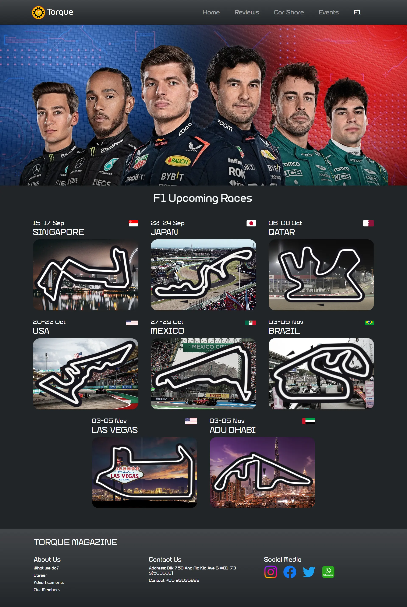

Name: Lim Zhi Xiang
Torque magazine is a dynamic online platform dedicated to catering to the insatiable appetite of car enthusiasts around the world. Whether you're a petrolhead seeking the latest updates on your favourite automotive brands or a casual car admirer looking for engaging content. My website is designed to be the one-stop hub for all things automotive, bringing together a diverse community of car enthusiasts and curious minds.
Structure of my webpage:
Nav-Bar: All webpage consist of a responsive nav bar which allows users to navigate easily through all the html pages which includes the home page, review page, car share page, events page and f1 page.
Footer: All webpage consist of a responsive footer which allows users to know more information about torque magazine, as well as links to torque's social medias.
Main-carousel container that plays a carousel of photos with description of each photos, and prev and next buttons to allow users to scroll through the carousel.
Review container, which consist of the car reviews on the review page with a header followed by 3 evenly spaced containers that each has a view specs button which allows users to click on to uncollapse a container which shows the individual specification of the cars.
Events container, which consist of the upcoming events followed by 3 evenly spaced containers that consist of the event poster followed by a short description of the event.
To provide users indept and ubiased review of the latest car models, covering the performance of the car. Whether you are looking for a new-daily driver or a high performance car, the reviews will help u make informed decisions.
zx_profile container thats shows a image of the reviewer, followed by name and description of the reviewer
Review container this area comprises individual cards, each showcasing images of reviewed cars, the car model's name, and a short description. Users can interact with a "View Full Review" button to access complete reviews for specific car models
A full review container shows up upon clicking the "View Full Review" button. This container features a banner image of the car, followed by sections displaying vehicle specifications, an overview of the review, car images, driving experiences, and a static carousel for viewing different images.
This page provides users with a platform to post and share their car pictures with the torque community members.
Car share container consist of a logo of car share, car share header, with a description of car share.
Posting container users can upload their photos and provide captions in this section. Clicking the "Post Now" button will publish the photo and caption to the share container.
The share container serves as a centralized hub where all user posts are displayed. It showcases the collective contributions of community members, creating an engaging and dynamic space for sharing car-related content.
This page provides users with a update on the latest torque events, and it also allows users to register for the events.
This container features an autoplaying video of the event, an event header, a description, and an autoplaying carousel displaying event images and sponsor logos.
A upcoming events container where users can view upcoming events with event posters, image descriptions, and a "Register Now" button.
When the "register now" button is clicked, a event registration container opens up where users can provide their details and select the event they wish to be registered for.
This page provides users with a update on the upcoming races in F1
A container consist of a F1 image banner, folllowed by a header.
f1_container contains information on all upcoming F1 races, with each race's details stored in an "upcoming_box" container. Information includes race dates, host countries, country flag images, and race track layout images.
1.I have been a car enthusiast from a young age, and I used to watch top gear in the past. "Top Gear" not only showcased a wide range of cars but also presented them in a fun and engaging manner, making it an enjoyable experience for viewers. The show's ability to blend humor, adventure, and in-depth car knowledge left a lasting impression on me, and I want to bring some of that excitement to my own website.
2."Best Motoring" is a show from Japan that provided in-depth reviews and insights into various types of cars, including new models and tuner cars. The show's coverage of the Japanese car culture, tuning scene, and spirited driving performances resonating with me. The knowledge and expertise showcased on "Best Motoring" inspired me to create a platform where I could share my own insights and passion for cars with others who share similar interests.
3.Being a F1 (formula 1) fan, I'm deeply inspired by the F1 webpage's ability to immerse fans like myself into the thrilling universe of F1, providing a comprehensive and interactive experience that keeps us hooked throughout the racing season. It's this level of dedication to the craft and passion for all things automotive that fuels my desire to create a webpage that resonates with fellow car enthusiasts and captures the essence of what makes the world of cars and racing so exhilarating.
1.Providing alt text for images: My images includes descriptive alt text attributes, which is important for users who rely on screen readers as it provides a textual description of the images, allowing the content to be accessible to individuals with visual impairments.
2.Responsive design: The webpage is designed to be responsive, adapting to different screen sizes and devices. This ensures that users on mobile devices, tablets, or desktops can access the content without issues.
3.Good colour contrast: My webpage is built on a dark background with white text with this contrast it allows the crucial text to be easily readable, as low contrast text can be challenging for people with visual impairments to read.
1.Clear navigation: Having a well-defined and responsive navigation bar enhances user-friendly navigation across the various webpages of my website. The headers within the navigation items provide intuitive guidance, making it effortless for users to access different sections of the webpage's content.
2.Content organisation: Having well organised content on the webpage is one of the factors Ive considered when designing my webpage. I ensure that different content on the same webpage is being organised into separate containers so that the users can easily identify the type of content they are looking at. I framed the containers so that they usually come with a header, description and image.
3.Sizing of buttons and fonts: Having a webpage with well sized fonts and buttons allows users to comfortably read the contents of the webpage with ease regardless of screen size. That is one consideration that i had when designing the webpage hence i make sure to make sure that the font sizes are still readable in small screen size and the buttons are easy to click on.
In the process of developing my website, I embarked on a journey to learn JavaScript to enhance the interactivity and functionality of my site. JavaScript proved to be a pivotal skill in achieving the desired results.
1.One fundamental skill I acquired was the ability to add and manipulate CSS classes dynamically using JavaScript. This skill allowed me to alter the appearance and behavior of HTML elements in real-time. For instance, I could change a container styles when users interact with a button. By grasping this concept, I unlocked the potential to create a more engaging and responsive user interface.
2.Another critical aspect of JavaScript that I delved into was the use of the innerHTML property. This feature enabled me to manipulate the content within HTML elements effortlessly. Whether it was updating text, inserting new content, or creating entirely new containers dynamically, innerHTML became an indispensable tool in my web development toolkit. For instance, I could display user-generated content on my website by dynamically injecting HTML content into designated areas. Thats a function that i implemented into my car_share webpage which allows users to post pictures with captions.
3.Understanding the Document Object Model (DOM) was central to my JavaScript learning journey. I needed to select specific HTML elements, modify their attributes, and add or remove elements from the webpage as needed. This skill allowed me to create dynamic, data-driven, and user-responsive web pages. It gave me the power to craft an interactive user experience by manipulating the structure and content of the webpage through JavaScript.
How did i achieve all these learning:
I leveraged online resources, particularly YouTube tutorials, where they demonstrated practical JavaScript applications. These tutorials provided hands-on guidance. I also looked into javascript documentations to identify the key features that I would require during the building of my webpage, and how to use these features. But even with all the youtube tutorials and documentation I was able to learn the most by experimenting and testing of my javscript codes to see how different approaches effected my webpage and how I was able to customise it to meet the requirements of my webpage.
1.Creating a responsive website is crucial for providing a consistent and user-friendly experience across different devices and screen sizes. My successful implementation of Bootstrap, along with custom CSS, ensured that the webpage adapts gracefully to various screen dimensions. This means users can access my content on desktops, tablets, and smartphones without sacrificing usability or readability. It's important to note that responsive design is fundamental for catering to the diverse range of devices users might employ to access my site.
2.The choice of high contrast fonts and appropriate font sizes greatly contributes to the readability and visual appeal of my webpage. High contrast fonts make text stand out and are particularly helpful for users with visual impairments or those viewing the website in challenging lighting conditions. This decision not only enhances accessibility but also makes my content more engaging and accessible to a broader audience.
3.My use of JavaScript to enhance interactivity on the webpage is a significant success. It enriches the user experience and encourages engagement with the content. Specific examples, such as displaying additional information when users click the "View Specs" button, enabling event registration, and allowing users to post pictures with captions, demonstrate my commitment to keeping visitors engaged.
1. Addition of more animations: One area that I envisioned improving was the integration of animations, especially on the review page. Specifically, I aimed to implement a collapsing animation when users clicked on the "View Full Review" button. The idea was to have the "zx_profile" and "review" containers collapse from the top down, creating a visually appealing transition while the "full review" container expanded. Although I drew inspiration from various online sources, I encountered performance issues, including lag, when testing these animations. Upon reflection, I attribute this lag to potential suboptimal JavaScript code optimization. To address this, further refinement and optimization of the JavaScript code would have been necessary to achieve smoother animations.
2. Potential for improvement in html tags usage: In hindsight, incorporating more HTML elements, such as the strategic use of "section" tags, could have contributed to a more comprehensible and organized representation of different sections within my webpages. This would have aided not only in structuring the content but also in making it easier for developers and collaborators to grasp the layout and hierarchy of the webpage components.
[1] Mozilla Developer Network, “Javascript”, [Webpage]. https://developer.mozilla.org/en-US/docs/Web/JavaScript
[2] Bootstrap, “Carousel”, [webpage]. https://getbootstrap.com/docs/5.3/components/carousel/
[3] Bootstrap, “compiled CSS and JS” [webpage] https://getbootstrap.com/docs/5.3/getting-started/download/
[4] miguelznunez, “ImageCarousel”, 2021 [source], https://github.com/miguelznunez/ImageCarousel
WireFrames:
    Mockups:
    